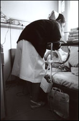

|
こんなタイトルを付けるなんて、私はきわもの好き、あるいは、売らんかななんだろうか。
そう思われても仕方ないかもしれないが、実は、タイトルの方が、何も考えないで、ぼうっとしていた私に、下りてきてしまったのだ。
そんな状態、めったにあることじゃない。
私にとって、ほんものの主題となりうるものだから、やれ、「恥ずかしい」だの、「あざとい」だの自意識や邪念を取り払い、いじくり回さないで、そっと自分の心のうちを見つめたいと思う。
* * * * *
「腟の奥」で思い出すことがある。
子宮がんの手術が済み、退院間近になったある日、病棟のお風呂で入浴して、手には洗面器、ネグリジェ姿（※1）で自分の個室に戻ろうと、パタパタと廊下を歩いていたら、主治医が反対側からすたすたと歩いてくる姿が目に入った。パタパタはスリッパ、すたすたはサンダル履きだ。
ちょうどいい。
もうすぐ退院するのに、お聞きしたいことがあった。私は質問をあまりためらわない。
もちろん、相手が、ものすごく忙しそうにしていらしたら、むやみに質問をぶつけて困らせるようなことはしないけど。

写真＝西山麗
そもそも、この医師を自分の主治医に選んだのは、質問しやすい雰囲気を醸し出していらしたことも大きい。なぜだか、もう口をきく前から、質問しやすい医師と、質問しにくい医師がいる。その医師が、「僕は患者さんとのコミュニケーションが好き」と話しているのを聞いて、なんだか、とっても納得してしまった。
「センセイ、あの、退院した後、検診では、どんなこと調べるんですか? 子宮頸部の細胞診とか?」
医師は、「う〜ん」と言ったきり、ちょっと困った顔をした。そして、慎重に言葉を選ぶようにして「子宮頸部はもう、ないんだよ」と、申し訳なさそうな様子で口にした。
私はなんだか、ものすごーく恥ずかしくなってしまった。術式について、あれほど丁寧な説明を受け、子宮と2つの卵巣、卵管を摘出すると納得ずくで受けた手術だったのに。
なぜ、自分に子宮頸部が残っていると思ってしまったのだろう…。ひとえに、「検診＝子宮がん検診＝子宮頸部の細胞診」（※2）という連想がはたらいたのだと思う。
でも、私が受けるのは、検診は検診でも、自覚症状のない健康体の人が受ける予防や早期発見のためのものではなく、術後検診。
のちに、子宮の摘出の際に、以前は子宮頸部を残す術式が用いられていたことがあることを知ったから、子宮の摘出後に、子宮頸部の細胞診をすることがまったくないわけではないのだろうが。
* * * * *
もう一つ、退院前に、ショックを受けた出来事がある。唐突に、明日、退院と決まった日、予定では入院最後となる夜中に、下半身から出血が始まった。
私にとって、「性器出血＝がん」という印象が強いので、ひとり恐怖におののいて、当直の看護婦さんをトイレに招き入れて、出血で真っ赤になった西洋便器を見てもらった(なんか、恥も外聞もないですね)。
「あら、ほんとうねぇ」
看護婦さんは、「どうしようかな、どうしようかな」と悩んだ末に、仮眠中だったらしい当直医を起こして、診察の手配をしてくれた。
とても丁寧な内診で、術後まもない私に、傷つかないように、一番小さなクスコ(腟鏡)を使ってくれた。
看護婦さんも、後から、「よかったわねぇ。○○センセイの当直で。あのセンセイ、とっても内診とか丁寧で、親切なのよ」と言っていたから、ほんとうだ。
ところで、診察室での、その当直医との会話。
「どこから出血しているのか、今の段階ではわからないですね。膀胱炎かもしれないから、尿を検査に出して結果をみましょう。もしかしたら、腟のダンタンから出血しているのかもしれない」
「ダンタン?」始めて聞く単語だった。「どういう字、書くんですか?」
「ダンは断つ、タンははじっこの端です」
私はその時、初めて、自分の腟が途中からバッサリ断ち切れていて、縫合されているのだということが頭でわかった。
切って、縫ってある。
「断端」という単語が私に突き付けたイメージは、とっても、強いものだった。
ダンタン、ダンタン、ダンタン…。
翌日、元いた6人部屋で、同じような手術を受けた患者仲間に、自分がいかにバカだったか、いかに自分自身のからだのイメージと実態が乖離（かいり）していたかを話して、「アハハハハ、やんなっちゃう」と笑いながら、涙が目の端にあふれてきて困ってしまった。
きっと、これが第一歩なのだ。これから、メスの入った身体と、自分の頭のなかにある身体のイメージを摺（す）り合わせていかなければならないのだと、どこかで、覚悟した。
※1…婦人科病棟に入院するまで、ネグリジェは持っていなかった。入院のしおりに「前開きのネグリジェ」と指定があったので、ネグリジェを着るなんて気が進まなかったけれど、やむを得ず購入することに。でも、お店をあちこち探し回ったけれど、前開きのタイプはなかなか見つからなかった。時期が冬だったせいもあるのかもしれない。不正出血が止まらず腹痛もある身体で、手に入りにくい商品を探さなければならなかったことが、つらかったし、ちょっと理不尽だった。
やっと新宿の伊勢丹のナイトウェア売り場で発見。店員さんに、入院に必要でさんざん探し回ったことをお伝えしたら、「そういうお客さまがいらっしゃるので、うちでは、必ず、常備するようにしています」という頼もしい言葉が返ってきて、まばゆく感じられた。
入院中は衣類ひとつとっても、医療機関によって自前のところ、病院規定のパジャマ（基準病衣）を必ず着用しなければならないところ、選択できるところなど、いろいろあって興味深い。これも文化なのだろうか……。
※2…一般向けの「子宮がん検診」は子宮頸がんの検診で、子宮の入り口に当たる頸部のみの細胞を採取して、病理診断する。よく、「子宮がん検診を受けていれば、子宮のがんは大丈夫」と思い込んでいる人がいるが、それは誤解。子宮の奥に当たる体部は、50代以上や不正出血がある場合、または本人が希望したときのみ、対象にされる。
最近では、50代未満の子宮体がんも増えているので、20〜40代でも、不正出血がある人は、念のため、体部の細胞診も受けておくとベターだろう。
また、子宮頸がんのなかでも、最近、増加して1割を占めるようになっている腺がんは、検診ではなかなか発見しずらい。
頸部の細胞診の結果、「異常なし」と診断されても、不正出血やおりものなどの自覚症状が続くようなら、そのままにしないで、より専門性の高い医療機関での再検査をお勧めする。
ただ、不正出血の原因の多くは、子宮筋腫やびらん、ポリープなど良性の病気なので、心配し過ぎず、でも、抜かりなく、医療サービスを活用しよう。
今月でこの連載は終わります。ご愛読ありがとうございました。
|